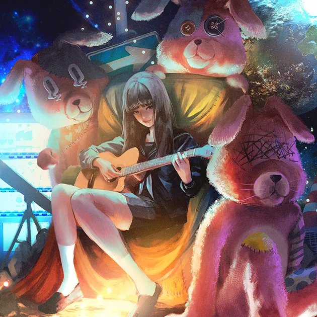

좋아하는 것
J-POP
2020년 코로나로 할게 없어져 일본 애니메이션을 본 것을 기점으로 J-POP도 즐겨듣게 됨.
MINAMI
일본의 싱어송라이터로서 2015년부터 활동을 시작했고, 풍부한 감정표현과 폭발적인 발성이 특징.
주요곡
목마름을 외치다
비를 기다리다
ZUTOMAYO
풀네임 계속 한밤중이면 좋을 텐데.(ずっと真夜中でいいのに。)로 보컬/작사/작곡 담당인 ACAね를 주축으로 하는 일본 밴드이며 록, 힙합, 발라드 등 흑인 음악 장르를 하며 가전제품을 악기로 쓰는 특징이 있음.
주요곡
초침을 깨물다
MIRROR TUNE

tuki.
일본의 싱어송라이터로서 14세에 만든 만찬가가 폭발적인 인기를 얻으며 주목을 얻었고, 노래 장르가 다양한 것이 특징.
주요곡
만찬가
휴우루리라파파
스포츠

야구팀 삼성라이온즈로 2011~2014년 4년 연속 우승으로 왕조를 세움, 이 이유로 팬이 됨.
영국 프리미어리그의 첼시로 2021년 유럽 축구 클럽 대항전인 유로파 챔피언스 리그에서 우승을 하게 된 계기로 팬이 됨.

영국의 슈퍼카 제조사인 맥라렌의 F1팀으로 F1 더 무비를 보고 F1에 관심이 생겨 보던 중 맥라렌 F1팀이 잘해서 팬이 됨.
음식

고기
어렸을때부터 핸드폰이랑 컴퓨터를 하다 보니 게임에 관심이 많이 생김.
싫어하는 것
야채의 식감과 맛이 싫음.

더워서 땀이 나는 것을 싫어함.